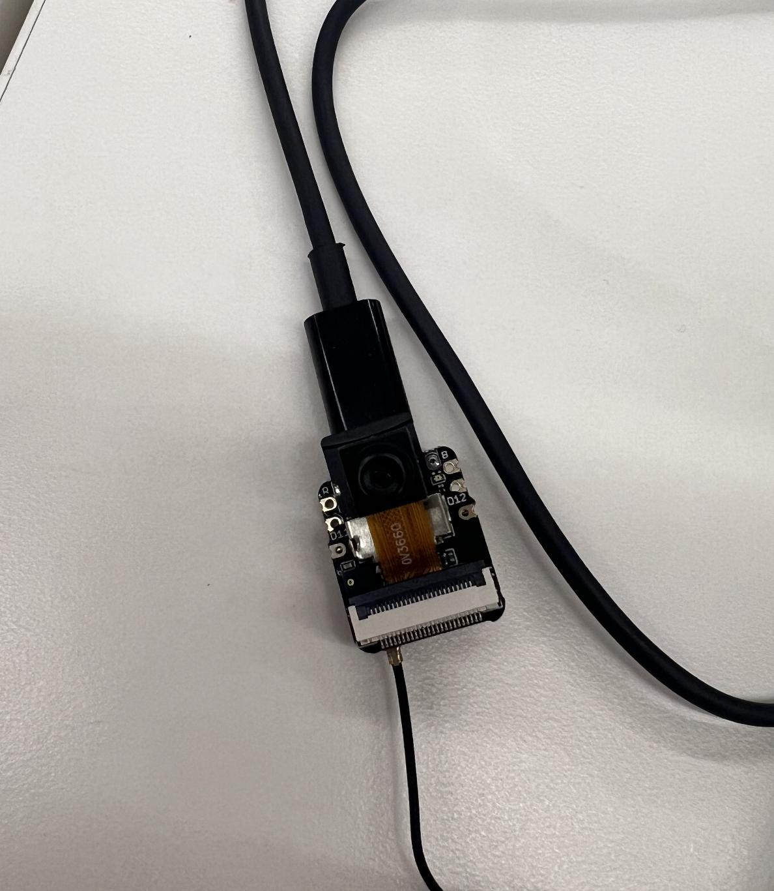

<div class="textcontainer">
<p class="margin"> </p>
<h3>Week 7: Electronic Outputs</h3>
<h4>Assignment: Minimum Viable Product for Final Project</h4>
<p class="margin"> </p>
<p><strong>Documentation:</strong></p>
<pre class="margin">
This week was a very heavy work week for the MVP (especially because we were given much more time). I had a few main goals that I needed to accomplish:
the first of these goals was to design an input, and the second was to design an output. Now, things have changed since the last update. Originally, I was planning to make a jukebox,
something that would end up amounting to not much more than a glorified Bluetooth speaker with a single motor for aesthetics. I wanted to diverge a bit, follow along the idea of making something
involving music, but really refining that idea more. I came up with the idea of making a camera that would take a photo, then use that photo and an AI model to output
a song that would match the photo. The idea is that the camera would be able to provide an unexpected output—something that is not traditional for a camera and stimulates a different
sense entirely. For this project, the input is the photo and the output is the QR code to the song. Over the course of this documentation I will cover some of the successes, failures, changes, and
complexities of doing a project like this. In the end, I was happy with the MVP that I was able to create, tackling the endpoints of the project by building the setup for the camera and the housing it will sit in,
as well as building out the software that will produce my output, the QR code. I want the final product to be more refined, for example by including a thermal printer or a speaker in the camera to play
the song as it is chosen or give the person access to the song directly. Also, it is important for me to make the housing better looking and to make an end-to-end system. Without further ado, however,
here is some of the progress.
</pre>
<p class="margin"> </p>
<p><em>ORIGINAL CAM DESIGN</em></p>
<img src="./Original Cam Design.png" alt="Original Cam Design" style="max-width: 100%; height: auto;">
<p class="margin"> </p>
<p><em>EXPOSED ORIGINAL CAM DESIGN</em></p>
<img src="./Exposed Original Cam Design.png" alt="Exposed Original Cam Design" style="max-width: 100%; height: auto;">
<p class="margin"> </p>
<p><em>HOUSING ATTEMPTS</em></p>
<img src="./Housing Tries.png" alt="Housing Tries" style="max-width: 100%; height: auto;">
<p class="margin"> </p>
<p><strong>Documentation:</strong></p>
<pre class="margin">
As you can see from these photos, there was a lot of trial and error that went into designing the camera housing. It changed a lot, partly because of minor mistakes with 3D printing (something that I will discuss later on),
and also because of a change of plans, as I ended up changing the camera model that I used entirely about halfway through the development. No matter what, though, the learnings from the older designs definitely continued to impact how the
newer designs have come out. In the original camera design, an ESP-CAM was used, and it is more clunky. The camera is also slightly worse than the updated one, which is the ESP32S3, which is smaller and fits the designs better.
There is an entire array of housing designs that I tried, with some failing to snap-fit together, others failing to print, and some that did not look good at all.
Eventually, it was easiest to design all of this while using a 3D model in Fusion. Using this model alongside my Fusion constructions, I could see the fits of all of the pieces before they were even complete.
This was a really successful change that I made, and I will continue to look out for opportunities like this because they are obvious but highly valuable.
</pre>
<p class="margin"> </p>
<p><em>ESP32S3</em></p>
<p></p>
<p class="margin"> </p>
<p><em>CAMERA FUSION MODEL</em></p>
<img src="./Camera Fusion Model.png" alt="Camera Fusion Model" style="max-width: 100%; height: auto;">
<p class="margin"> </p>
<p><em>FILE DOWNLOADS</em></p>
<div class="flexrow">
<a id="btn" href="./3D Camera Model.stl" download style="text-decoration: underline;">Download STL</a>
</div>
<p class="margin"> </p>
<p><em>INTERACTIVE STL</em></p>
<div id="stl-viewer" style="width: 100%; height: 400px; background-color: #f0f0f0;"></div>
<p class="margin"> </p>
<p><em>HOUSED CAMERA</em></p>
<img src="./Housed Camera.png" alt="Housed Camera" style="max-width: 100%; height: auto;">
<p class="margin"> </p>
<p><em>UPDATED DESIGN</em></p>
<img src="./Updated Design.png" alt="Updated Design" style="max-width: 100%; height: auto;">
<p class="margin"> </p>
<p><strong>Documentation:</strong></p>
<pre class="margin">
As you might be able to see from the changes from the prior collection of photos to the above collection of photos, there is a big change in the design of the housing. This is due to the transition to the other camera model.
The new camera model is smaller and fits the design better. I was happy to see good changes, since after fighting with the Arduino code upload once again (I had the wrong camera entered in my code so it was not tracking my camera),
I could see the results. It is faster, uses higher resolutions, but it does get hotter... Anyway, it is an improvement. The resultant housing design is very tight, and can be seen integrated into what the final product will sort of look like, based
on the original larger blue camera design. This part was a heavy dose of Fusion 360 design. It was fun to get a better handle on the shortcuts, and learn about the different ways to stick 3D-printed parts together and create shortcuts in my work.
I have realized throughout this process that the 3D design is really time consuming, but at times I did feel like I was entirely held back by the speed of the printer itself. The larger the design, the more I felt like the payoff should be really high,
but waiting and waiting for printers to become free and then trying to print mine and seeing the time estimate be really high is a bit demoralizing. Nevertheless, the work for the housing was nearly complete, and it is in solid shape for the MVP, though there may still be some changes
to make as I continue to improve the camera design. Ideally, there will be some buttons and motors on the camera that will allow the product to be more haptic and tactile, but that will all come later as the endpoints are connected back together at the end.
</pre>
<p class="margin"> </p>
<p><em>3D PRINTING ACTION</em></p>
<img src="./3D Printing Action.png" alt="3D Printing Action" style="max-width: 100%; height: auto;">
<p class="margin"> </p>
<p><em>3D PRINTING SUPPORTS</em></p>
<img src="./3D Printing Supports.png" alt="3D Printing Supports" style="max-width: 100%; height: auto;">
<p class="margin"> </p>
<p><strong>Documentation:</strong></p>
<pre class="margin">
I have alluded to it already, but 3D printing is an interesting challenge. It is obviously a very valuable tool, and allows us to create things that subtractive methods do not allow. Still, it is
a tool that has a skill floor as well. I had a few issues with the printer: filament getting stuck, restarting prints, and even prints snapping slightly when taking them off the bed. It is a difficult process from start to finish, but
although it is challenging, it is rewarding. I made a lot of housings, and all of them except the final one will go to waste. I remember that at the beginning of this class when we were first learning how to use the printers, we were taught
that it is OK to toss your old prints, especially if they have no value to you. It feels bad to just let things go to waste, but the value of each print is sometimes intangible. My workflows are faster, my designing is more efficient,
and the way that I have been able to repurpose old parts has been really great. Yes, I have tossed a number of failures, but the blue base still worked almost by chance, and so I can use it as a bit of an MVP frame on which to design my next shot at it.
</pre>
<p class="margin"> </p>
<p><em>CAMERA IN ACTION</em></p>
<img src="./Camera In Action.png" alt="Camera In Action" style="max-width: 100%; height: auto;">
<p class="margin"> </p>
<p><em>PHOTO TO SONG</em></p>
<img src="./Photo to Song.png" alt="Photo to Song" style="max-width: 100%; height: auto;">
<p class="margin"> </p>
<p><strong>Documentation:</strong></p>
<pre class="margin">
The first photo that I show above is a screenshot of the application that can be run to upload photos and then take that photo input, pass it through a Gemini API and a Spotify API, and return a song that best matches the photo. As mentioned above,
the point of this project is to have a camera that takes a photo and then outputs a QR code that can be scanned. The camera-in-action photo is a bit meta. Instead of just showing a screenshot of the stream that I was able to pull up through the camera,
I took a photo of the camera filming me taking a photo of it (that is so Inception, I know). But this shows that the camera had an active live stream and was working, and it will serve as the method through
which I will get photos. The code was done through the Arduino IDE, and it helped me set up the camera so it runs as long as the computer and the camera are connected to the same Wi-Fi network so that they can communicate.
Once in the live stream, I was able to collect stills. One such still is seen in the Photo to Song image above. The photo I took was of someone using a drill. The key is that, through the logic that I have set up, the LLM chose a song that matches the activity being
performed. Dolly Parton's "9 to 5" is what is shown on the QR code (scan it to find out for yourself!). This was a very successful use of the APIs and the camera, and shows that the processing logic does make sense for creating a final product.
Overall, it has been really fun to get this MVP together. I am excited to hear the feedback and to continue to refine the connections from the front (the inputs) to the back (the outputs).
</pre>
<p class="margin"> </p>
<p><strong>DESIGN REVIEW THOUGHTS:</strong></p>
<pre class="margin">
For the design review, I am hoping to hear about what could really take this project to the next level. Obviously, there is some level of inputs and outputs that are coming in, and playing with different media and subverting expectations
about what a camera is supposed to do will be really fun. I want to specifically hear about what a user would want to do with the product and what they want to see. Do they want to see a playlist of all of the songs that they have collected by taking photos?
Do they even want the output to be a QR code, or would they rather listen through a speaker? What is the best way to present this—should the housing be a camera or more like a microphone? Overall, lots of questions, but these are the targets I want to aim at.
Soon, the integration from start to finish should be complete, and I will start testing refinements. There is much more work to do still, and I am excited to see what I can create!
</pre>
<p class="margin"> </p>
<p><a href="../13_finalproject/index.html#week7-update">-> Final Project Week 7 Update</a></p>
<p class="margin"> </p>
</div>